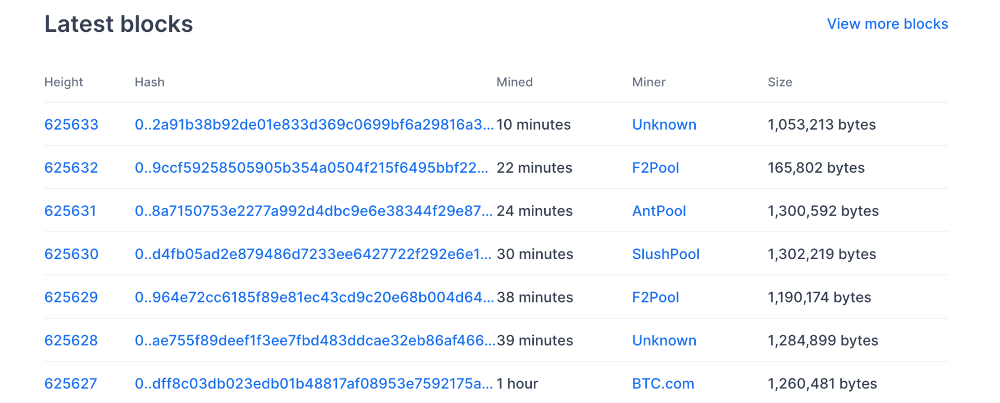
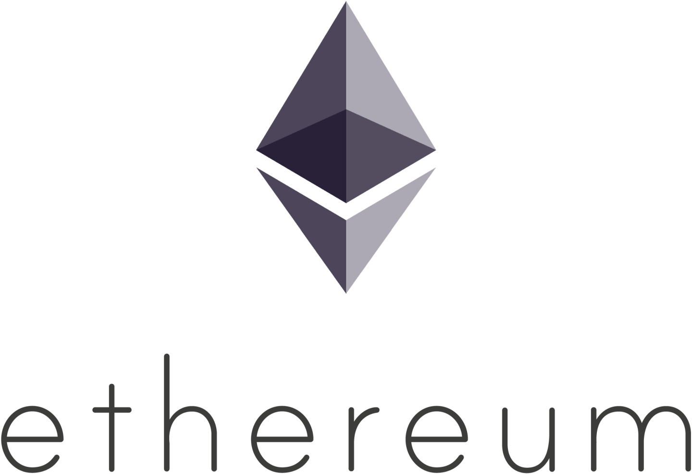

- 00 开篇词：搭建分布式知识体系，挑战高薪 Offer.md.html
- 01 如何证明分布式系统的 CAP 理论？.md.html
- 02 不同数据一致性模型有哪些应用？.md.html
- 03 如何透彻理解 Paxos 算法？.md.html
- 04 ZooKeeper 如何保证数据一致性？.md.html
- 05 共识问题：区块链如何确认记账权？.md.html
- 06 如何准备一线互联网公司面试？.md.html
- 07 分布式事务有哪些解决方案？.md.html
- 08 对比两阶段提交，三阶段协议有哪些改进？.md.html
- 09 MySQL 数据库如何实现 XA 规范？.md.html
- 10 如何在业务中体现 TCC 事务模型？.md.html
- 11 分布式锁有哪些应用场景和实现？.md.html
- 12 如何使用 Redis 快速实现分布式锁？.md.html
- 13 分布式事务考点梳理 + 高频面试题.md.html
- 14 如何理解 RPC 远程服务调用？.md.html
- 15 为什么微服务需要 API 网关？.md.html
- 16 如何实现服务注册与发现？.md.html
- 17 如何实现分布式调用跟踪？.md.html
- 18 分布式下如何实现配置管理？.md.html
- 19 容器化升级对服务有哪些影响？.md.html
- 20 ServiceMesh：服务网格有哪些应用？.md.html
- 21 Dubbo vs Spring Cloud：两大技术栈如何选型？.md.html
- 22 分布式服务考点梳理 + 高频面试题.md.html
- 23 读写分离如何在业务中落地？.md.html
- 24 为什么需要分库分表，如何实现？.md.html
- 25 存储拆分后，如何解决唯一主键问题？.md.html
- 26 分库分表以后，如何实现扩容？.md.html
- 27 NoSQL 数据库有哪些典型应用？.md.html
- 28 ElasticSearch 是如何建立索引的？.md.html
- 29 分布式存储考点梳理 + 高频面试题.md.html
- 30 消息队列有哪些应用场景？.md.html
- 31 集群消费和广播消费有什么区别？.md.html
- 32 业务上需要顺序消费，怎么保证时序性？.md.html
- 33 消息幂等：如何保证消息不被重复消费？.md.html
- 34 高可用：如何实现消息队列的 HA？.md.html
- 35 消息队列选型：Kafka 如何实现高性能？.md.html
- 36 消息队列选型：RocketMQ 适用哪些场景？.md.html
- 37 消息队列考点梳理 + 高频面试题.md.html
- 38 不止业务缓存，分布式系统中还有哪些缓存？.md.html
- 39 如何避免缓存穿透、缓存击穿、缓存雪崩？.md.html
- 40 经典问题：先更新数据库，还是先更新缓存？.md.html
- 41 失效策略：缓存过期都有哪些策略？.md.html
- 42 负载均衡：一致性哈希解决了哪些问题？.md.html
- 43 缓存高可用：缓存如何保证高可用？.md.html
- 44 分布式缓存考点梳理 + 高频面试题.md.html
- 45 从双十一看高可用的保障方式.md.html
- 46 高并发场景下如何实现系统限流？.md.html
- 47 降级和熔断：如何增强服务稳定性？.md.html
- 48 如何选择适合业务的负载均衡策略？.md.html
- 49 线上服务有哪些稳定性指标？.md.html
- 50 分布式下有哪些好用的监控组件？.md.html
- 51 分布式下如何实现统一日志系统？.md.html
- 52 分布式路漫漫，厚积薄发才是王道.md.html
- 捐赠
05 共识问题：区块链如何确认记账权？
本课时我们主要讲解“共识问题：区块链如何确认记账权？”
区块链可以说是最近几年最热的技术领域之一，区块链起源于中本聪的比特币，作为比特币的底层技术，本质上是一个去中心化的数据库，其特点是去中心化、公开透明，作为分布式账本技术，每个节点都可以参与数据库的记录。
区块链是一个注重安全和可信度胜过效率的一项技术，如果说互联网技术解决的是通讯问题，区块链技术解决的则是信任问题。
今天我们关注区块链中的核心问题：作为分布式账本，每个参与者都维护了一份数据，那么如何确认记账权，最终的账本以谁为准呢？
区块链的共识
区块链是一种去中心化的分布式账本系统，区块链的共识问题实际上是来源于分布式系统的一致性问题。
共识（Consensus）故名思义，共同的认识，共识问题研究的是多个成员如何达成一致，典型的比如投票选举。
共识机制在区块链中扮演着核心的地位，共识机制决定了谁有记账的权利，以及记账权利的选择过程和理由。不同的虚拟货币采用共识机制也不同，常见的共识机制有 POW、POS、DPOS等。
我们前面提到 CAP 中的 C 是 Consistency（一致性），Consistency 和 Consensus 有什么区别呢？
Consistency 侧重的是内容在时间顺序上的一致和统一，而 Consensus 则是指由许多参与者对某项内容达成共识，所以一般把 Consistency 翻译为“一致性”，把 Consensus 翻译为“共识”。
拜占庭将军问题
前面的课程中我们已经分享了几个经典的一致性算法，如果把共识机制延伸到分布式系统中，就是系统需要有一个主进程来协调，系统的所有决定都由主进程来达成一致性。
到了区块链中，由于区块链是一种去中心化的分布式系统，所以区块链中是没有类似于团队里的领导，以及分布式系统中的 master 角色，这样就需要有某种共识机制，以便保证系统一致性。
一般在网络通信中，把节点故障，也就是信道不可靠的情况称为“非拜占庭错误”，恶意响应，也就是系统被攻击，传递错误消息称为“拜占庭错误”。
为什么叫拜占庭错误呢？实际上是来自于一个故事模型：
拜占庭帝国就是中世纪的土耳其帝国，拥有巨大的财富，周围 10 个邻邦垂诞已久，但拜占庭高墙耸立，固若金汤，没有一个单独的邻邦能够成功入侵。任何单个邻邦入侵都会失败，同时也有可能自身被其他 9 个邻邦入侵。
拜占庭帝国防御能力如此之强，至少要有十个邻邦中的一半以上同时进攻，才有可能攻破。然而，如果其中的一个或者几个邻邦本身答应好一起进攻，但实际过程出现背叛，那么入侵者可能都会被歼灭。
于是每一方都小心行事，不敢轻易相信邻国，这就是拜占庭将军问题。

（图片来自维基百科）
在拜占庭问题里，各邻国最重要的事情是：所有将军如何能过达成共识去攻打拜占庭帝国。拜占庭将军问题核心描述是军中可能有叛徒，却要保证进攻一致，由此引申到计算机领域，发展成了一种容错理论：
一群将军想要实现某一个目标，比如一致进攻或者一致撤退，单独行动是行不通的，必须合作，达成共识；由于叛徒的存在，将军们不知道应该如何达到一致。
其实，拜占庭将军问题（Byzantine Generals Problem）和我们前面提到的 Paxos 算法、逻辑时钟等，都是由 Leslie Lamport 提出的。
Lamport 可以说是分布式系统的奠基人之一，由于在分布式领域的一系列贡献，Lamport 获得了 2013 年的图灵奖。 拜占庭将军问题和我们今天要讨论的记账权有什么联系呢？
在记账权的归属中，关键的是如何避免恶意共识的出现，也就是错误的记账，类似如何处理拜占庭将军中的叛徒。
比特币是区块链技术最广泛的应用，在比特币中如何决定记账权呢？答案就是 POW 机制，接下来我们分析 POW 工作量证明机制。
POW 工作量证明
PoW（Proof of Work，工作量证明）被认为是经过验证最安全的拜占庭解决机制，最早是用来防垃圾邮件的，典型的就是 Google 邮箱的反垃圾邮件系统。
Google 邮箱强制要求每一个给 Google 服务器发送邮件的发送者，必须先完成一定量的计算工作，造成一小段时间的延迟，比如延迟 1 秒，如果是正常的邮件发送，这个时间是可以接受；如果是广告邮件发送者，因为要进行大量的发送工作，这种无价值的计算是无法忍受的。
挖矿的由来
挖矿是比特币系统中一个形象化的表达，那么挖矿是怎么来的呢？
比特币挖矿是将一段时间内比特币系统中发生的交易进行确认，并记录在区块链上形成新区块的过程，由于需要竞争记账权，利用计算机去计算 Hash 数值，随机碰撞解题，这个过程就是挖矿。
换句话说，就是比特币系统出一道数学题，大家抢答最优解，挖矿就是记账的过程，矿工是记账员，区块链就是账本。
比特币的 POW 实现
比特币中的 POW 实现，是通过计算来猜测一个数值（Nonce），得以解决规定的 Hash 问题，下面是比特币的区块结构，可以看到区块头有个随机数字段，这个就是 Nonce 值：

中本聪在比特币系统中设置了一道题目，通过不断调节 Nonce 的值，来对区块头算 Hash，要求找到一个 Nonce 值，使得算出来的 Hash 值满足某个固定值。
具体的 Hash 方法一般是使用 SHA256 算法 ，你可以查看这个小工具来测试 https://tool.oschina.net/encrypt?type=2。
我们来简化一下计算过程，假设第 100 个区块给出的区块值是下列字符串，最早计算出该字符串的节点可以获得比特币：
f7684590e9c732fb3cf4bf0b8e0f5ea9511e8bbaacb589892634ae7938e5700c
由于 Hash 算法是一个不可以逆的算法，没法通过具体的 Hash 值倒推出原文，这样每个节点只能采用穷举的方法，也就是选择各种字符串，比如开始的 a、b、c、1、2、3、…，不断的尝试。
比特币系统自身会调节难度，控制解题的时间，一般来讲，约每 10 分钟挖出一个区块，在这 10 分钟内，计算机只能不停地去计算，去试各种字符串。
这个过程实际上是考验各个节点的服务器性能，也就是算力。如果你算力非常强大，有几万台服务器，可以很快得到 Nonce 值，也就是正确答案：lagou，对应 Hash 值和题目要求一致。
接下来你就可以把这个 Nonce 值放在结构体里，通过 P2P 网络广播出去，其他的系统节点收到后，发现这个 Nonce 值是合法的，能满足要求，会认为你挖矿成功。
由于解出了题目，你会获得系统对应的比特币奖励，以及本区块内所有交易产生的手续费。其他节点发现有人已经算出来了，就会放弃本次计算，然后开启下一个区块的题目，去寻找下一个区块头的 Nonce 值。
作为落地的最大区块链系统，比特币的区块信息一直在动态生成。下面这张截图记录了比特币最近的区块信息，区块信息来自 https://www.blockchain.com/，你也可以点击链接查看最新的区块高度。

区块链分叉和 51% 攻击
Hash 问题具有不可逆的特点，主要依靠暴力计算，谁的算力多，谁最先解决问题的概率就越大。当掌握超过全网一半算力时，就能控制网络中链的走向，这也是所谓 51% 攻击的由来。
前面我们说过，因为区块链中每个节点都可以参与记账，系统中可能出现链的分叉（Fork），最终会有一条链成为最长的链。
但是在现实社会中，牵扯到参与各方巨大的利益关系，算力之间的博弈往往并没有那么简单，以比特币为例，已经分裂出了 BCH（比特币现金）、BTG（比特币黄金）等分叉币。
POW 机制优缺点
POW 的优点有很多，POW 是第一个完全实现去中心化共识算法的，并且节点自由进出，容易实现，由于对算力的高要求，破坏系统花费的成本也巨大。
POW 机制的缺点也是显而易见的，最大的就是浪费能源，巨大的算力被浪费在了无尽的挖矿行为中，并且本身并不产生任何价值。
这也是区块链被很多人指责的一点，浪费了大量的能源，收获的仅仅是一堆无价值的数据存储，换个角度来思考，这也说明了在去中心化的场景下，实现信任是多么的困难。
另一方面也可以看到，大量的数字货币矿场都是建设在西南地区的深山中，利用当地价格低廉的电力资源，或者就直接和发电站建设在一起。
其他共识方法
除了 POW 机制，还有其他的共识方法，典型的就是 POS 和 DPOS 等。
POS 权益证明
POS（Proof of Stake，权益证明）类似现实生活中的股东大会机制，拥有股份越多的人拥有越多的投票权，也就越容易获取记账权。 
POS 是通过保证金来对赌一个合法的块成为新的区块，收益为抵押资本的利息和交易服务费。提供证明的保证金越多，则获得记账权的概率就越大，合法记账者可以获得收益。著名的数字货币 ETH（以太坊），就在共识算法中采用了 POS 机制。
DPOS 委托权益证明
采用 DPOS（Delegated Proof of Stake，委托权益证明）机制的典型代表是 EOS，如果说 POS 类似股东大会，比较的是谁持有的股份多，那么 DPOS 类似于公司董事会制度，在 DPOS 共识制度下，会选出一定数量的代表，来负责生产区块。
总结
区块链可以说是分布式系统最广泛的应用之一，今天介绍了区块链共识问题的由来、拜占庭将军问题，以及典型的 POW 解决机制。
区块链是一个非常广的主题，以拜占庭将军问题为例，在区块链之前，还有两种解决方案：口头协议和书面协议。专栏的内容是以分布式系统为主，后面的章节不会继续区块链相关话题的讨论，如果你希望了解更多的区块链技术及应用，下面附上了一些相关的资料：
© 2019 - 2023 Liangliang Lee. Powered by gin and hexo-theme-book.